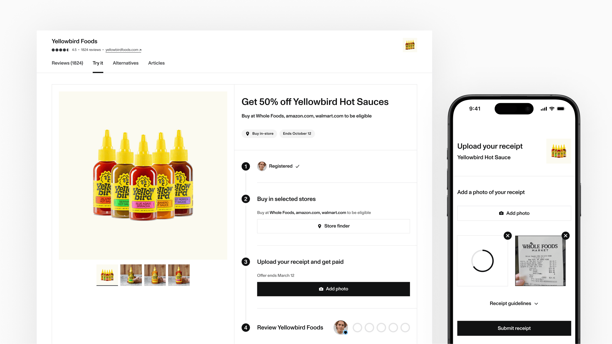
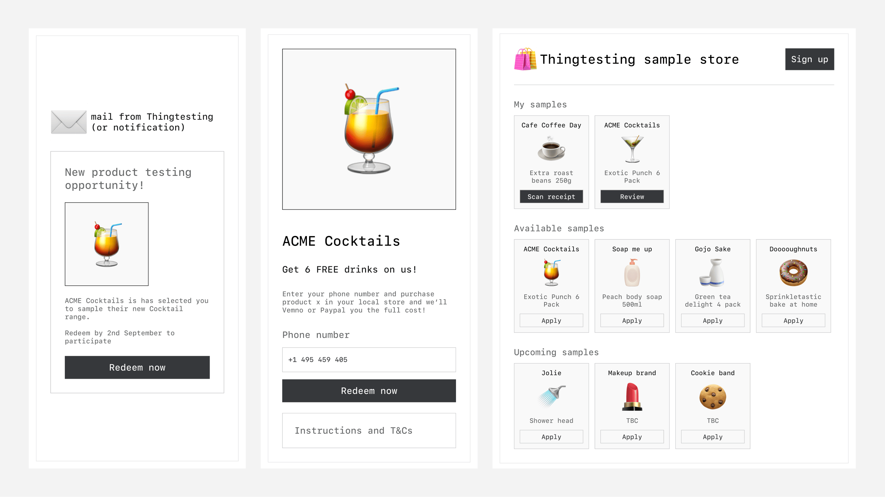
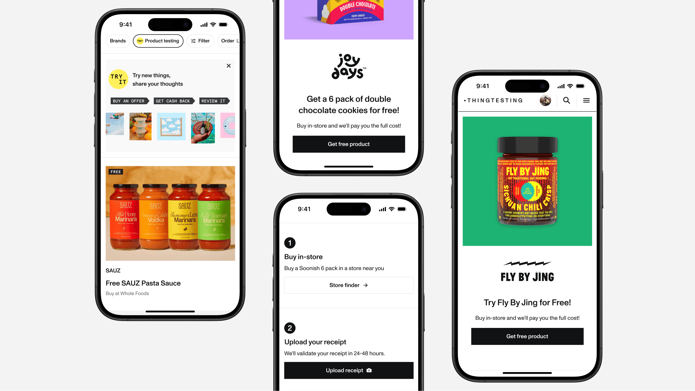
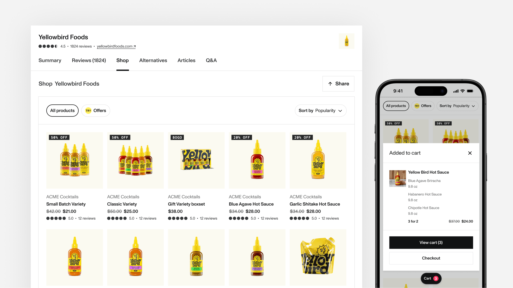

2023 - 2025 • thingtesting.com
As the Lead Designer for Thingtesting’s “Try It” product, I tackled the challenge of turning organic growth into revenue by addressing brands’ most pressing pain points. By combining research, design, and iteration, we built a product that helped brands drive in-store sales, gain insights, and expand their retail presence—all while learning valuable lessons along the way.
Previous monetisation attempts had fallen short—primarily because Thingtesting hadn’t yet reached a scale where brands saw it as an essential platform. However, with strong organic growth among end users, the timing was right to explore a sustainable monetisation model that aligned with both brand and user needs.
We had a working assumption that Thingtesting’s most valuable proposition for brands would be data insights. To test this assumption, I conducted a series of open-ended interviews with brands, ensuring we avoided bias and uncovered genuine needs.
We identified a set of bullseye customers — emerging brands experiencing strong growth but not yet reaching a mainstream audience. To accelerate learning, I developed a research plan and coached the team to conduct paired interviews, allowing us to gather insights more efficiently.
These findings made it clear that a data-driven monetisation strategy wouldn’t work. Instead, we needed to explore a model that directly supported brands’ sales and retail expansion efforts.
We tested many iterations of early wireframes and prototypes with brands who were target customers
Based on our research, we concluded that our monetisation strategy needed to directly support brands in driving sales, as this was their most pressing challenge. Rather than building a one-size-fits-all solution, we decided to focus on a specific segment: brands expanding into retail. This group faced a well-defined problem that we were uniquely positioned to solve—helping them drive in-store sales and measure their retail performance.
We tested simple landing pages with a sign up form that allowed consumers to register and participate in offers
I iterated from early prototypes to build the simplest possible version of the product, prioritizing the end-user experience over brand-facing features. This initial version allowed users to discover offers on Thingtesting, sign up, receive participation instructions, and upload a receipt as proof of purchase—creating a seamless, low-friction way to validate purchases.
To maximize learning and agility, I pushed for a concierge approach with brands. This allowed us to focus on refining the user experience while working closely with early brand partners, gathering valuable insights to inform future iterations.
Customisable landing pages (left) • Consumer surveys (middle) • Ability to purchase directly on Thingtresting (right)
We later iterated to allow brands to list all of their products on Thingtesting and for consumers to purchase directly on Thingtesting.
Thingtesting 'Try It' branding used across product, across social media and in email communications
We Launched with a simple branding, but later when we had more confidence in the approach spent time developing a brand. Important to position away from discounts even though that’s what we were essentially offering. Thingtesting’s mission is to help people discover and try new exciting products, so a different approach was required. I landed on a concept of presenting products like they were in an art gallery - inspired by Art gallery concepts For this project, I thought about how museums and galleries design present their exhibitions in order to elevate what we were offering.